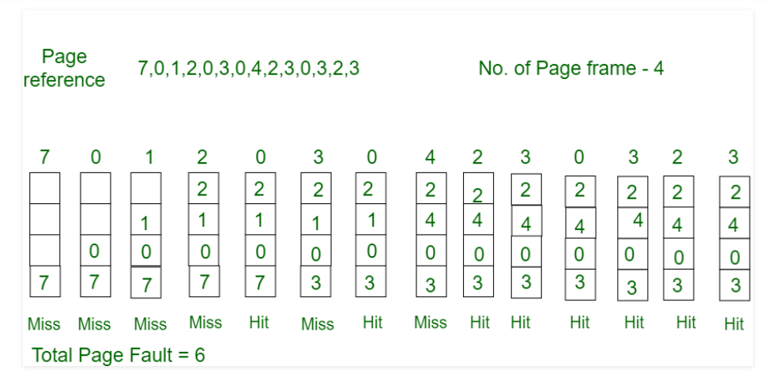

Optimal Page Replacement algorithm is the best page replacement algorithm as it gives the least number of page faults. It is also known as OPT, clairvoyant replacement algorithm, or Belady’s optimal page replacement policy.
In this algorithm, pages are replaced which would not be used for the longest duration of time in the future, i.e., the pages in the memory which are going to be referred farthest in the future are replaced.
This algorithm was introduced long back and is difficult to implement because it requires future knowledge of the program behaviour. However, it is possible to implement optimal page replacement on the second run by using the page reference information collected on the first run.
•Consider the page references 7, 0, 1, 2, 0, 3, 0, 4, 2, 3, 0, 3, 2, with 4 page frame. Find number of page fault.
